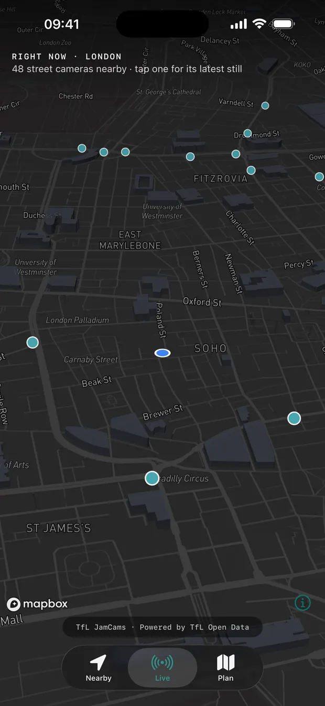
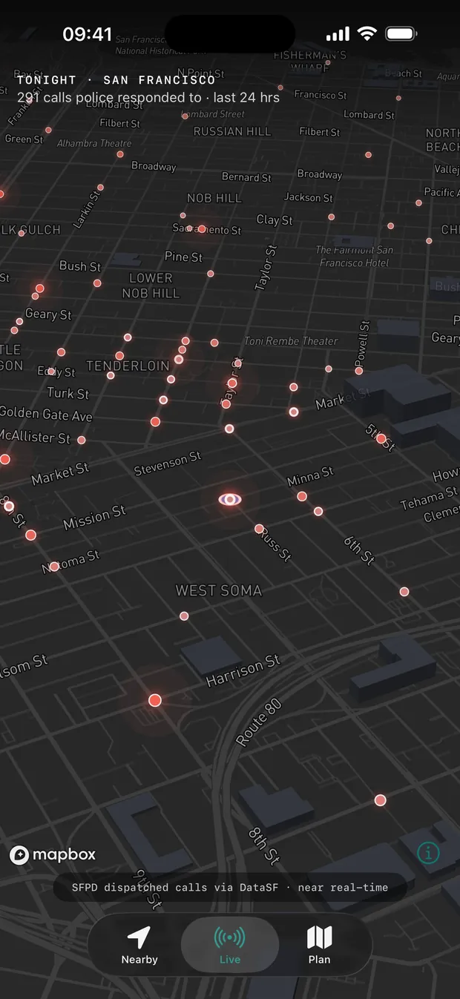
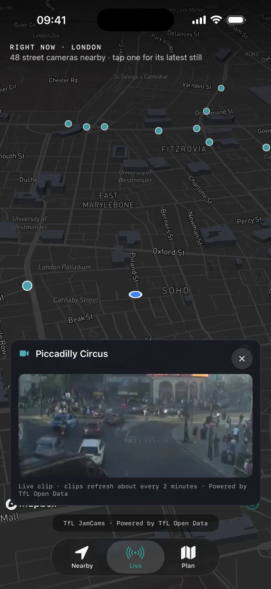
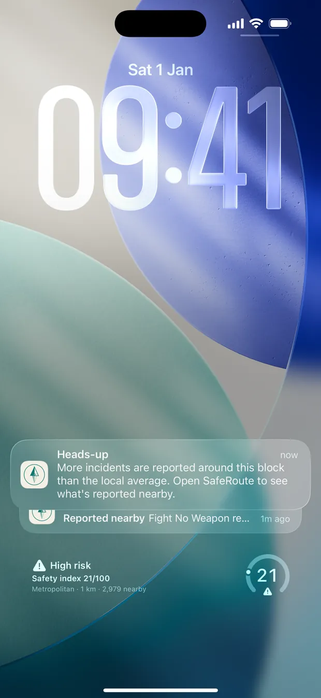
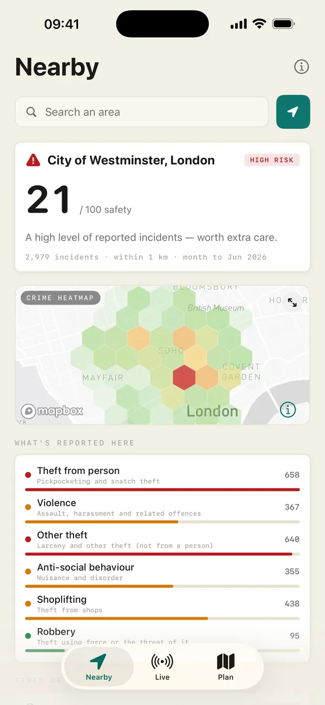
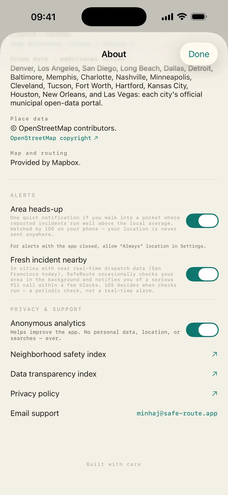

SafeRoute scores any address from official police data, plans walking routes by real risk, and — in a growing list of cities — shows you the last 24 hours of 911 calls and live street cameras. No accounts. No ads.
Free · iPhone, iPad, Apple Watch · Requires iOS 16.4+


Crime statistics tell you about last month. The Live tab tells you about tonight — and it only appears in cities whose data is genuinely that fresh.
A dark, tilted 3D map of your city where each 911 dispatch call burns as an ember — brighter the fresher it is. Tap one to see what was reported and when. Live today in New Orleans and San Francisco, where calls land on the map minutes after they happen.
Dispatch calls are not confirmed crimes, and the app says so on every one. They never touch your safety scores.
In London, tap any of 900+ Transport for London traffic cameras and watch a short clip refreshed roughly every two minutes — Piccadilly Circus, Oxford Street, Charing Cross Road. Toronto's city cameras are in too, with more cities being measured.
Public traffic cameras only, proxied through us so the camera network never sees your device. Powered by TfL Open Data.

Turn on one calm notification when you walk into a block where reported incidents run well above the local average — and, in near real-time cities, an occasional background check for serious calls a few streets away. Both are off until you switch them on.
Your phone watches the boundaries itself. No push servers, no location ever sent to us — and hard limits so it can never spam you.

Open the app anywhere we cover and read your surroundings in one screen: a 0–100 safety index, what's actually reported nearby, when incidents cluster by time of day, and the 24-hour places you could walk into.
Every candidate walking route is scored on severity, proximity and time of day — then you pick.
Send a live link so someone can watch you get home, with turn-by-turn on iPhone, iPad and Watch.

Crime data is uneven, late, and different in every city. Most apps hide that. We publish it — and we build so that missing data can never read as good news.
"3,664 incidents over 7 months to Aug 2026" — because London publishes one month and most US cities publish year-to-date. A bare count would mislead.
If a police force publishes nothing or a feed fails, the app says exactly that instead of showing a reassuring empty map.
A public transparency index rates every city we cover on what it publishes, how fresh it is and how precise — including where we come off badly.
There is no account to make, nothing to sell, and no advertising. The alerts run entirely on your iPhone — your location never reaches our servers at all. Camera images are fetched by us, never by your device.
Open it and it works. Nothing to create, nothing to remember.
Anonymous, no personal data or searches — and one switch turns it off.

Safety scoring is built on each place's own official open crime data. Outside a covered area, routing and search still work — the score simply waits until you're somewhere we cover.
England, Wales & Northern Ireland via data.police.uk — plus live TfL street cameras across London.
New York · Los Angeles · Chicago · Houston · Dallas · Fort Worth · Philadelphia · San Diego · San Francisco · Washington D.C. · Boston · Seattle · Denver · Detroit · Baltimore · Las Vegas · Memphis · Nashville · Charlotte · Minneapolis · Cleveland · Kansas City · New Orleans · Tucson · Long Beach · Hartford
Toronto Police Service and Vancouver Police open data — with Toronto's city traffic cameras live in the app.
FGJ investigation-folder data for all 16 alcaldías, served through the open Hoyo de Crimen API.
Type any street, neighborhood or landmark and get its safety index on a live crime map — the same official data the app routes on. Free, no sign-up.
1,222 areas across ten cities · New York · London · Chicago · LA · San Francisco · Seattle · Toronto · Washington DC · Boston · Philadelphia
Free on the App Store. Nothing to sign up for.
iPhone · iPad · Apple Watch